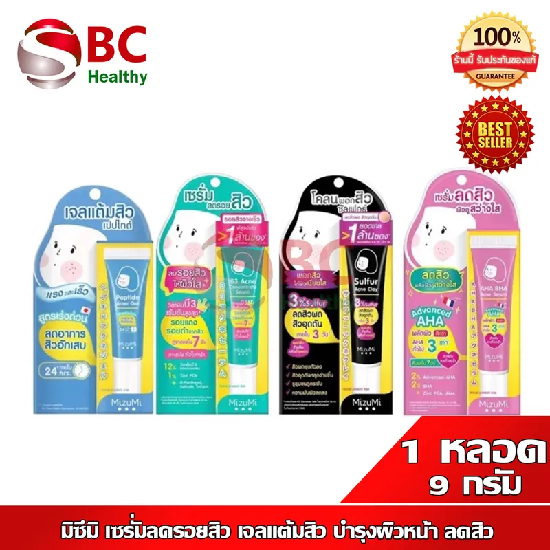

วิเคราะห์ข้อมูลจาก 6 แหล่งข้อมูลจริง เพื่อพิสูจน์ว่า MizuMi น้ำตบมารีนชูการ์ให้ผิวชุ่มชื้น+กระจ่างใส คุ้มค่าแก่การลงทุนหรือไม่

บทสรุปความงามที่คุณต้องลอง
เลือกสินค้าที่เหมาะกับคุณที่สุดได้เลยที่นี่